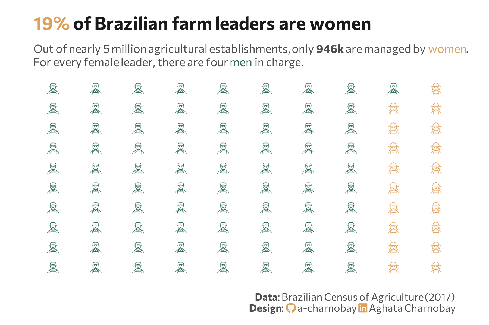

library(sidrar)
library(waffle)
library(extrafont)
library(tidyverse)
library(here)
library(colorblindr)
library(ggimage)
library(ggtext)
library(showtext) 02.Pictogram
Comparisons
Pictogram
Waffle

1 Setup
1.1 Load R packages
1.2 Load data
# Table 8917: Number of farms by farmer sex
# https://ftp.ibge.gov.br/Censo_Agropecuario/Censo_Agropecuario_2017/Caracteristicas_Gerais/indice_de_tabelas_censoagro_car# acteristicas_gerais.pdf
farmer_gender <- get_sidra(x = "8917",
geo = "Brazil")1.3 Set theme
# Font setup
font_add_google("Commissioner")
showtext_auto()
showtext_opts(dpi = 300)
font_main <- "Commissioner"
# Font Awesome for caption
font_add(family = "fa-brands", regular = here("fonts", "Font Awesome 7 Brands-Regular-400.otf"))
# Colors
title_col <- "grey10"
text_col <- "grey30"
bg_col <- "#F2F4F8"2 Prepare data for plotting
# Data prep
farmer_gender_clean <- farmer_gender |>
filter(`Condição legal das terras` == "Total",
`Cor ou raça do produtor` == "Total",
`Condição do produtor em relação às terras` == "Total",
`Unidade de Medida` == "Unidades") |>
filter(`Sexo do produtor` %in% c("Homens", "Mulheres", "Não se aplica")) |>
mutate(valor_num = as.numeric(as.character(Valor))) |>
group_by(`Sexo do produtor`) |>
summarise(total_valor = sum(valor_num)) |>
mutate(
percentual = (total_valor / sum(total_valor)) * 100,
squares = as.integer(round(percentual))
)
# Icon adjustments
img_man <- "icons/farmer_man.png"
img_woman <- "icons/farmer_woman.png"
plot_data <- expand.grid(
x = 1:10,
y = 1:10
) %>%
as_tibble() %>%
arrange(x, y) %>%
mutate(img = case_when(
row_number() <= 81 ~ img_man,
TRUE ~ img_woman
)) %>%
mutate(
icon_color = if_else(img == img_man, "#2D6A4F", "#dda15e")
)3 Plot
p <- ggplot(data = plot_data) +
geom_image(
mapping = aes(x = x, y = y, image = img, color = icon_color),
size = 0.06,
by = "height"
) +
scale_color_identity() +
scale_y_reverse() +
labs(
title = "<span style='color:#dda15e;'>19%</span> of Brazilian farm leaders are women",
subtitle = "Out of nearly 5 million agricultural establishments, only **946k** are managed by <span style='color:#dda15e;'>women</span>.<br>For every female leader, there are four <span style='color:#2D6A4F;'>men</span> in charge.",
caption = paste0(
"**Data**: Brazilian Census of Agriculture (2017)",
"<br>**Design**: <span style='font-family:fa-brands; color: #dda15e;'></span> a-charnobay ",
"<span style='font-family:fa-brands; color:#dda15e;'></span> Aghata Charnobay"
)
) +
coord_cartesian(expand = TRUE, clip = "off") +
theme_minimal(base_family = font_main) +
theme_minimal(base_family = font_main) +
theme(
plot.title = element_markdown(face = "bold", size = 16, color = title_col,margin = margin(t = 5, b = 10)),
plot.subtitle = element_markdown(size = 10, color = text_col, margin = margin(b = 10),lineheight = 1.2),
plot.title.position = "plot",
plot.caption = element_markdown(size = 9, color = text_col, lineheight = 1.1, margin = margin(t = 15)),
plot.background = element_rect(fill = "white", color = NA),
panel.background = element_rect(fill = "white", color = NA),
plot.margin = margin(10, 30, 10, 30),
panel.grid = element_blank(),
axis.text.x = element_blank(),
axis.text.y = element_blank(),
axis.title.x = element_blank(),
axis.title.y = element_blank(),
legend.position = "none",
)
#cvd_grid(p) # check color accessibility